For this, there are three functions described below. Before that, let’s set up this introduction.
1. List of palettes
The oz_palettes function contains the list of palettes available. Individual palettes are gouped by theme in a list. The oz_palettes variable is a list of these collated lists.
names(oz_palettes) # See all palette themes
[1] "warramaba" "lizards" "landscapes" "birds" "frogs"
[6] "snakes" "plants" "fish" "inverts" "mammals"
names(oz_palettes$lizards) # See all lizard palettes
[1] "c.decresii" "c.kingii" "e.leuraensis" "i.lesueurii"
[5] "l.boydii" "m.horridus" "m.horridus2" "t.nigrolutea"
[9] "v.acanthurus" "v.pilbarensis" "n.levis" "s.spinigerus"
[13] "e.kingii"
We can call a specific list using subsetting rules for lists.
oz_palettes[["warramaba"]][["whitei"]] # Subset the palette for Warramaba whitei, format: [[theme list]][[palette list]]
[,1] [,2] [,3] [,4] [,5] [,6]
[1,] "#E5A430" "#9C7210" "#D7A8B8" "#BAB24F" "#392821" "#9B391B"
[2,] "1" "3" "6" "5" "4" "2"
oz_palettes$warramaba$whitei # does the same as above but using list names
[,1] [,2] [,3] [,4] [,5] [,6]
[1,] "#E5A430" "#9C7210" "#D7A8B8" "#BAB24F" "#392821" "#9B391B"
[2,] "1" "3" "6" "5" "4" "2"
Understanding the structure of the palette
Lists within lists may seem daunting but you’d rarely need to access the palettes individually. It is also easy enough to add your own palettes if you are comfortable with manually editing package functions in R.
We are happy to accept community contributions. Adding pre-chosen hex codes is easy to do. It may take longer to make a palette if we need to chose hex colours from an image.
The general structure for a set of palettes is:
palette <- list(
pal1 = rbind(c(<hex codes>), c(<order of discrete colours>))
)
Two things to note:
- The hex codes are stored as a vector in the first row of the list
- The second row of the list is a vector of the order colours are used when plotting discrete colours
2. Defining and using a palette
The palettes in this package are set as above. The main function is the palette generator. It acts as a housekeeping function to allow R to interpret the desired palette for plotting. The behaviour of this function depends on whether a discrete or continuous palette is desired and the number of colours requested.
If a discrete palette of 3 colours is desired, then the function will chose the subset of 3 colours to be included from the full option of colours in a palette. The chosen order of these colours is hard coded in the list of palette.
Note there is no need to tell colRoz what theme the palette you want is in. Type in the palette name and colRoz will search the entire oz_palette list
pal <- colRoz_pal(name = "ngadju", n = 3, type = "discrete")
# a palette of only 3 colours
library(ggplot2)
ggplot(iris, aes(Petal.Width, Petal.Length , colour=Species)) +
geom_point() +
scale_colour_manual(values = pal) +
theme_classic()

If a continuous palette is desired, then the function will use the function colorRampPalette in the grDevices package (included in R) to generate a gradient of colours between the first and last colour in the desired palette.
"continuous" palettes are generated by default if the type argument is left blank. In ggplot2, use the function scale_colour_gradientn to set the continuous scale.
pal <- colRoz_pal(name = "ngadju", n = 50, type = "continuous")
ggplot(iris, aes(Petal.Width, Sepal.Length , colour=Petal.Length)) +
geom_point() +
scale_colour_gradientn(colours = pal) +
theme_classic()
 ***
***
3. Visualise a palette
The function to plot the palette is only for graphing. Information is taken about the number of colours to plot from the desired palette and the palette is plotted. The name of the palette is shown.
print_palette(colRoz_pal("c.decresii"))# if empty, all colours are shown

print_palette(colRoz_pal("c.decresii", type = "discrete", n = 4))

print_palette(colRoz_pal("c.decresii", type = "continuous", n = 30))

Palette by categories
Birds
names(oz_palettes$birds)
[1] "p.cincta" "c.azureus" "m.cyaneus" "d.novae"
 Black-throated finch. Australia’s 2019 Bird of the Year!
Black-throated finch. Australia’s 2019 Bird of the Year!
Azure kingfisher photo by Brenton von Takach


Superb fairywren photo by Jessica McLachlan


Emu
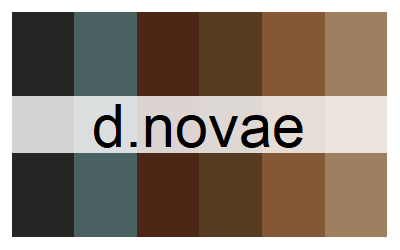

Fish
names(oz_palettes$fish)
[1] "r.aculeatus"
Picasso triggerfish photo by Brenton von Takach. Also called humuhumunukunukuapuaa in Hawaiian (see also the Octonauts episode)
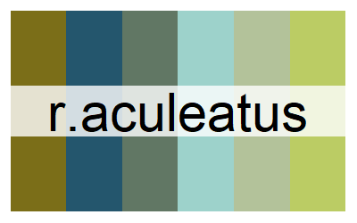

Frogs
names(oz_palettes$frogs)
NULL
There are no frog palettes yet! Send us some and have your name here.
Inverts
names(oz_palettes$inverts)
[1] "p.mitchelli" "k.tristis" "m.oscellata" "a.conica"
[5] "v.viatica" "c.brevi" "a.westwoodi" "a.plagiata"
[9] "physalia" "c.australasiae" "k.scurra" "l.vestiens"
[13] "t.australis"
Mitchell’s diurnal cockroach photo by Craig White
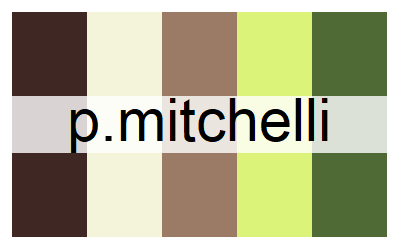

Chameleon grasshopper photo by Kate Umbers


Gaudy acacia grasshopper
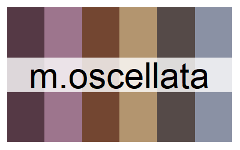

Giant green slant-face


Matchstick grasshopper, VIC. See Vandiemenella grasshoppers


Short-tailed nudibranch, Port Philip Bay, VIC
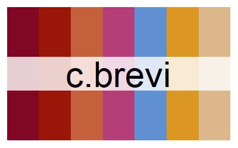

Tortoise beetle
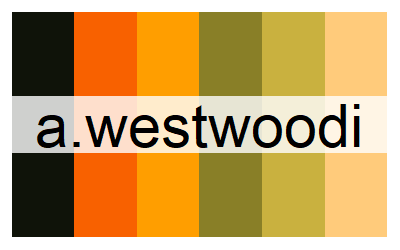

Two-spots tiger moth
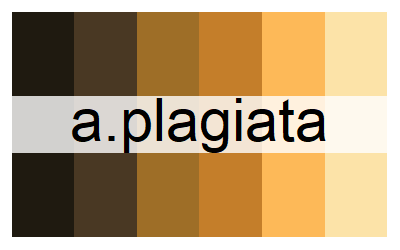

Bluebottle. Undescribed species
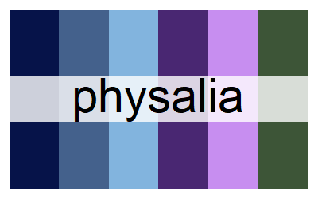

Green grocer cicada
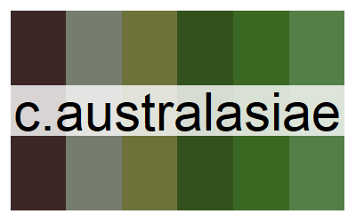

Key’s matchstick grasshopper. See more info about K. scurra
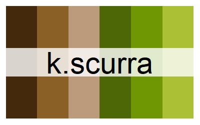

Sea cucumber, intertidal VIC
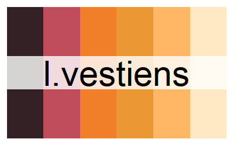

Biscuit star, Port Phillip Bay, VIC
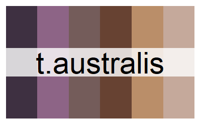

Landscapes
names(oz_palettes$landscapes)
[1] "uluru" "shark_bay" "sky" "desert_sunset"
[5] "desert_dusk" "desert_flood" "salt_lake" "daintree"
[9] "spinifex" "nq_stream" "kimberley" "capricorn"
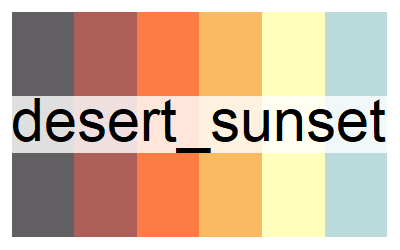


Photo from Jordan Iles
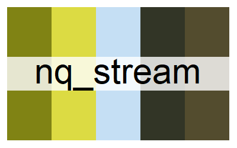

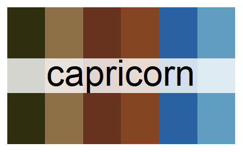

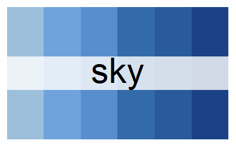


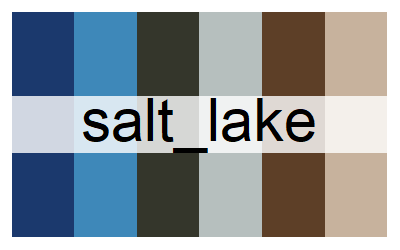
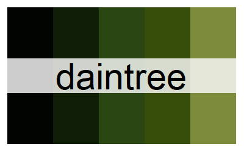
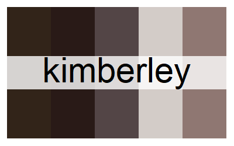
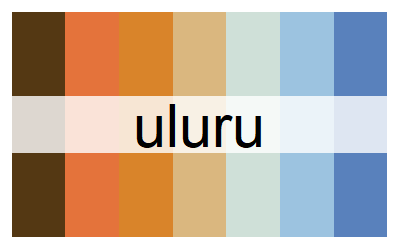
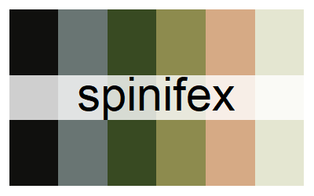
Lizards
names(oz_palettes$lizards)
[1] "c.decresii" "c.kingii" "e.leuraensis" "i.lesueurii"
[5] "l.boydii" "m.horridus" "m.horridus2" "t.nigrolutea"
[9] "v.acanthurus" "v.pilbarensis" "n.levis" "s.spinigerus"
[13] "e.kingii"
Tawny dragon
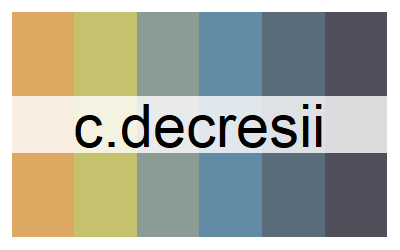

Blue Mountains water skink
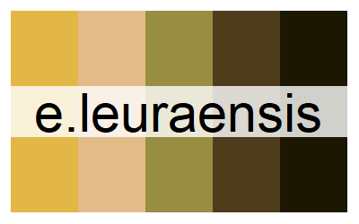

Thorny devil
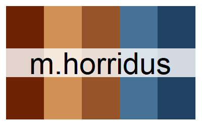 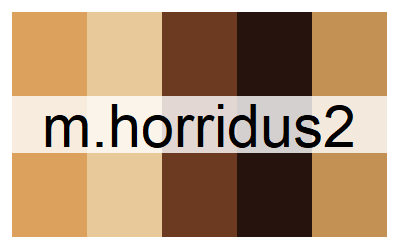

Blotched blue-tongued skink
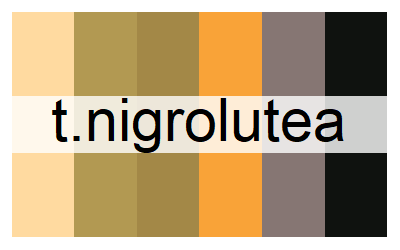

South-western spiny tailed gecko
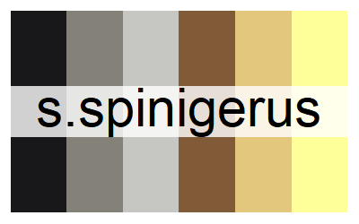

King’s skink
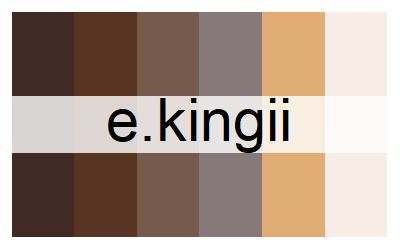

Three-lined knobtail gecko
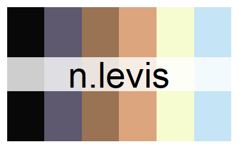

 Frilled-neck lizard
Frilled-neck lizard
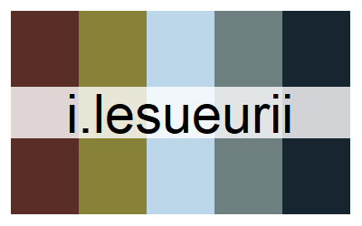 Eastern water dragon
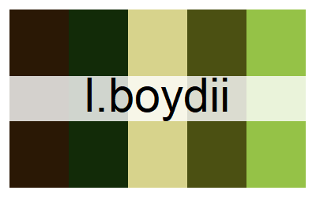 Boyd’s forest dragon
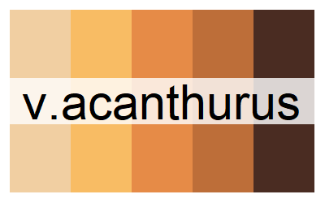 Spiny-tailed monitor
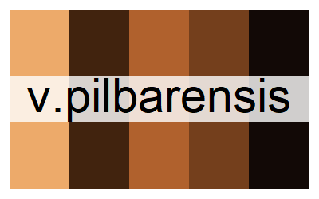 Pilbara rock monitor
Mammals
names(oz_palettes$mammals)
[1] "p.breviceps" "thylacine"
Sugar glider
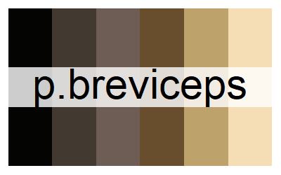

Thylacine (T. cynocephalus)
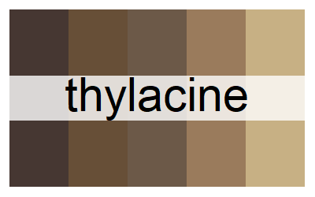

Plants
names(oz_palettes$plants)
[1] "n.violacea" "xantho"
Blue lily photo by Emma Dalziell
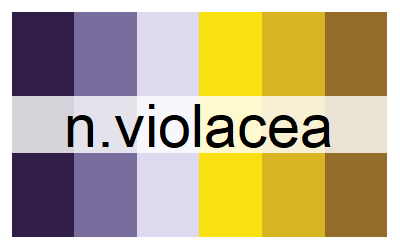

Xanthorrhoea grasstree photo by Sarah Mulhall
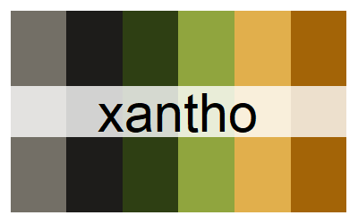

Snakes
names(oz_palettes$snakes)
[1] "a.ramsayi"
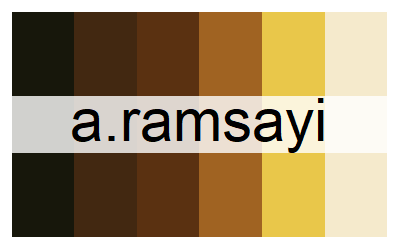 Woma python
Warramaba grasshoppers
These are palettes based on the colours of matchstick grasshoppers in the genus Warramaba.
You can read more about matchstick grasshoppers on Jacinta’s website.
There are other matchstick grasshopper palettes in the inverts palette.
names(oz_palettes$warramaba)
[1] "grandis" "flavolineata" "whitei" "picta" "virgo"
[6] "ngadju"
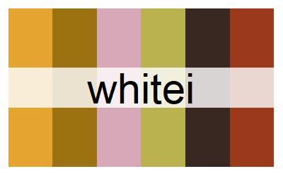

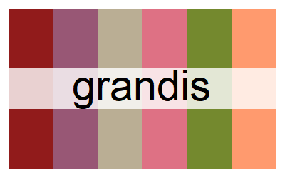

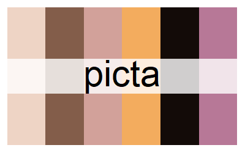

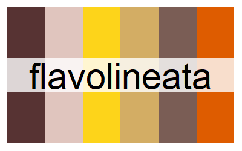

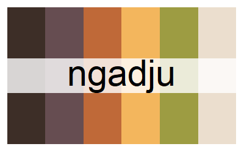

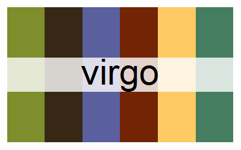